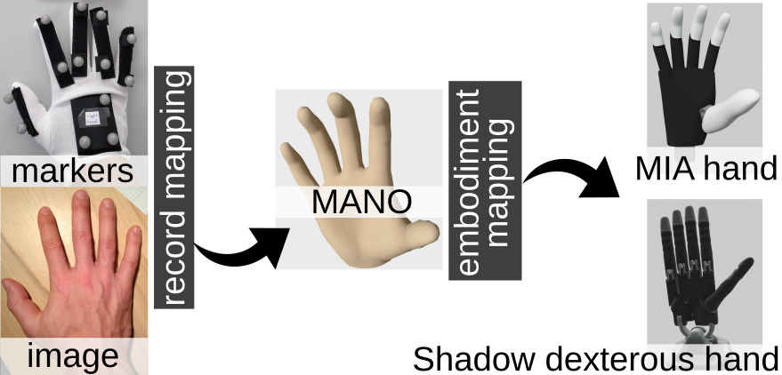

hand_embodiment¶
This is the implementation of the paper
Alexander Fabisch, Manuela Uliano, Dennis Marschner, Melvin Laux, Johannes Brust, Marco Controzzi: A Modular Approach to the Embodiment of Hand Motions from Human Demonstrations, https://arxiv.org/abs/2203.02778
Contents:
The general idea of this software package is to use the MANO hand model to represent human hand configurations and then transfer the state of the MANO model to robotic hands. This allows us to quickly change the motion capture approach because we have an independent representation of the hand’s state. Furthermore, we can easily change the target system because we just need to configure the mapping from MANO to the target hand.
The currently implemented motion capture approaches are:
marker-based motion capture with the Qualisys system
The currently implemented target systems are:
Mia hand from Prensilia
Dexterous Hand from Shadow
Robotiq 2F-140 gripper
BarrettHand